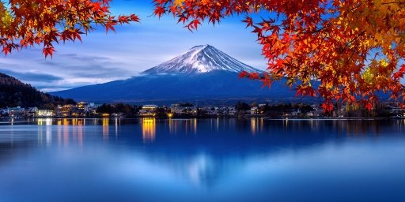
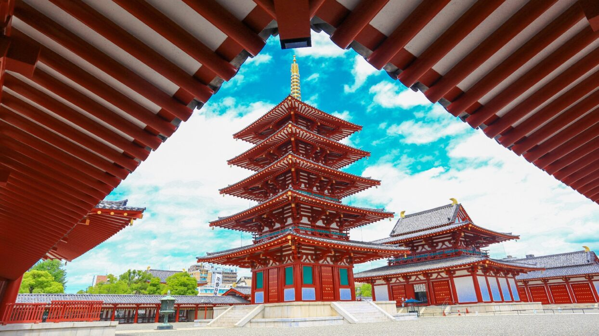
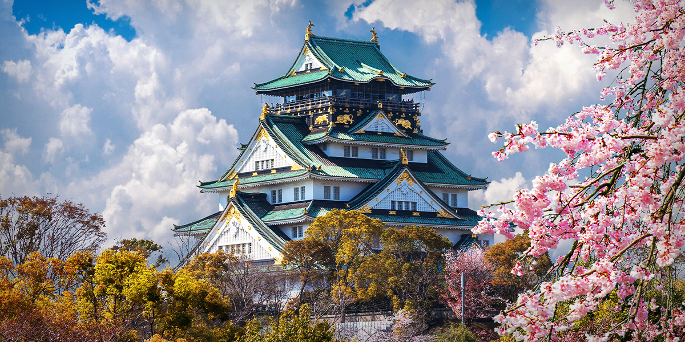

1. ภูเขาไฟฟูจิ
ภูเขาไฟฟูจิเป็นภูเขาที่สูงที่สุดในประเทศญี่ปุ่น และเป็นสัญลักษณ์สำคัญของชาติ
2. วัดคิโยมิซุเดระ

วัดคิโยมิซุเดระเป็นวัดเก่าแก่ในเมืองเกียวโต มีชื่อเสียงด้านสถาปัตยกรรมไม้
3. โตเกียวทาวเวอร์

โตเกียวทาวเวอร์เป็นจุดชมวิวเมืองโตเกียวที่สำคัญ และเป็นสัญลักษณ์ของเมือง
4. ศาลเจ้าฟุชิมิอินาริ
ศาลเจ้าฟุชิมิอินาริมีเสาโทริอิสีแดงจำนวนมาก เป็นสถานที่ศักดิ์สิทธิ์ของญี่ปุ่น
5. ปราสาทโอซาก้า
ปราสาทโอซาก้าเป็นโบราณสถานที่มีความสำคัญทางประวัติศาสตร์ และเป็นแหล่งท่องเที่ยวสำคัญ